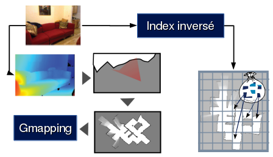

Utiliser kinav¶
Dans cette partie, nous allons apprendre à utiliser Kinav pour réaliser un apprentissage et une relocalisation basé sur un même bag.
Les noeuds de kinav exécute des flow de données. Nous allons voir dans un premier temps ce qu’est un flow.
Les flow¶
Un peu à la manière d’ecto, le flow développé est un graphe acyclique contenant des cellules appellées processus. Chaque processus possède des entrées et des sorties. Il est nécessaire de chainer les processus pour obtenir un flot de données.
Un flow est donc composé de process. Chacun de ces process dispose d’entrées, de paramètres et de sorties.
Les entrées et sorties sont identifiés comme étant des “port”.
{kind=link}
Exemple de process : AProcess avec deux entrées, deux paramètres et deux sorties. Remarquez qu’un paramètre peut être relié à une sortie.
L’ensemble des process forme un flow qui est exécuté dans un process monothread.
Lors de l’exécution du flow, tous les process n’ayant pas de port d’entrée sont exécutés, puis tous les process qui ont résolu leur dépendances.
Premier exemple d’utilisation de Kinav¶
Etape (1) : Capturer les données¶
Pour capturer les données, nous allons enregister certains topics de ROS dans un BagFile.
Notre exemple se base sur l’utilisation d’un TurtleBot 2.
Sur le robot, il faut d’abord lancer le script permettant de contrôler le robot :
roslaunch kinav_launchfiles base.launch
Ce launchfile va lancer : le noeud ROS turtlebot (bringup), la description XAML du robot, le noeud permettant de controler le robot à partir d’une manette ainsi que le noeud permettant de créer un laser à partir de deux caméras RGB-D.
Ensuite, lancer l’enregistrement des topics :
Note
Il est nécessaire d’avoir préalablement créer un répertoire bagfiles à la racine de votre $HOME. Le fichier bagfile ainsi créé possédera un nom unique composé de la date et l’heure de création.
roslaunch kinav_launchfiles record.launch
Il ne reste plus qu’à parcourir l’environnement !
Etape (2) : Créer un dictionnaire¶
Un dicionnaire a pour rôle de transformer des caractéristiques visuelles (ou features) en mots (ou Words).
Pour créer un dictionnaire, nous devons donc extraire des caractéristiques visuelles à partir d’images, puis les trier afin de générer un arbre de données où chaque feuille représentera un mot.
Note
Pour créer un arbre de données, nous avons besoin de features. Dans kinav, nous prenons comme image source, les images contenues dans un répertoire. Il est préférable de composer ce répertoire avec un ensemble d’images diverses (comme des images d’intérieurs d’appartements) auxquelles s’ajoutent quelques images récupérées depuis l’environnement final.
Au préalable, il faut donc collecter suffisament d’images dans un répertoire sur votre disque dur. Ce répertoire peut être composé de sous-répertoires possédant également des images. Dans l’idéal, cette base de données d’images est composé d’images d’intérieur.
Plusieurs centaines d’images devraient être suffisantes pour créer un dictionnaire.
Nous devons également penser à la structure du dictionnaire, qui se résumera à la question suivante : Combien de mot sont nécessaires ? Plus il y a de mots, plus kinav pourra différencier les lieux entre eux. Cependant, attention, trop de mots font atteindre un seuil qui dessert l’apprentissage.
Deux paramètres permettent de faire varier le nombre de mot du dictionnaire :
- cluster : nombre de groupe à créer lors du découpage d’une feuille;
- depth : profondeur maximum du dictionnaire;
Pour calculer le nombre de mots, utiliser la formule suivante :
Soit par exemple 2 cluster et 14 de depth :
Dernière étape de réflexion avant la création du dictionnaire : choisir quels algorithmes d’OpenCV utiliser pour extraire les caractéristiques visuelles et ainsi créer les descripteurs. Pour notre exemple, nous allons prendre SIFT.
Pour lancer la création d’un dicionnaire :
rosrun kinav kinav_node _flow:=dico.flow _path:=/path.../dataset/ _feature_detector:=SIFT _descriptor_extractor:=SIFT _cluster:=2 _max_depth:=13 _max_item:=100 _dico:=/path/results/mondico.dico
Warning
Remarquez le paramètre dico, permettant de préciser ou enregistrer le dictionnaire. Il est impératif que le nom du dictionnaire se termine par .dico.
Ce noeud va parcourir le répertoire path, puis tous les sous-répertoires, à la recherche d’images. Il va en extraire des caractéristiques visuelles ainsi que leurs descripteurs, puis les stocker dans notre dictionnaire. Lorsqu’il n’y a plus d’images à traiter, les caractéristiques visuelles sont triées en fonction de leur distance.
Etape (3) : Créer une carte métrique¶
Cette carte est créee à partir du Noeud ROS GMapping.
Nous avons définit des paramètres précis pour la génération de carte avec GMapping, dans le but de réaliser des cartes à partir de données moins précises qu’un télémètre laser, en favorisant, par exemple, l’odométrie du robot.
Dans une console :
roscore &
rosparam set use_sim true
roslaunch kinav_launchfiles gmapping.launch.xml scan_topic:=scan_asus
et dans une autre :
rosbag play --clock populi-date-heure.bag
Lorsque le bag est lu, enregistrer la carte métrique à l’aide de la commande suivante :
rosrun map_server map_saver -f masupermap
Etape (4) : Apprendre l’environnement¶
Lors de cette étape, nous allons associer des caractéristiques visuelles avec des positions discrétisées dans une grille.
Pour cette réalisation, nous allons rejouer le bag utilisé lors de la création de la carte, en lançant au préalable des noeuds nécessaires à l’opération.
{kind=link}
On lance le serveur ROS :
roscore &
rosparam set use_sim_time true
Puis on prépare la carte métrique :
rosrun map_server map_server masupermap.yaml
On lance ensuite AMCL pour se relocaliser :
roslaunch kinav amcl.launch scan_topic:=/scan_asus
Enfin, on lance deux nodelets pour les caméras chargées d’extaire les mots des images, et le noeud de traitement de l’apprentissage :
roslaunch kinav bag.launch dico:=mondico.dico
rosrun kinav kinav_node _flow:=learn.flow
_distance:=1
_words_path:=/where_to_save_data/
_dico:=mondico.dico
_resolution:=0.15 _orientation:=8 &
Dernier point, on relance le même bag pris lors de la génération de la carte :
rosbag play --clock $bagfile
Lorsque le bag a fini d’être lu, on sauvegarde les données sous forme de fichiers :
rosservice call /kinav/SaveWords
Dans le répertoire défini dans words_path, devrait se trouver un ensemble de fichiers portant l’extension .word ainsi qu’un fichier data.idf et data.tf.
Etape (5) : Se relocaliser¶
On lance le serveur ROS :
roscore&
rosparam set use_sim_time true
La carte métrique et AMCL :
rosrun map_server map_server mamp.yaml
roslaunch kinav amcl.launch scan_topic:=/scan_asus
Les nodelets pour les caméras :
roslaunch kinav bag.launch dico:=mondico.dico
Et enfin, le noeud de relocalisation visuelle. Celui-ci va se relocaliser à chaque fois qu’il le peut :
rosrun kinav kinav_node _flow:=reloc.flow
_words_path:=$words/
_dico:=$dico
_position_file_output:=$resultdir/positions.data
_error_position_file_output:=$resultdir/error_position.data
_relocation_file_output:=$resultdir/relocation.data
_resolution:=$resolution _orientation:=$orientation
_min_words:=$min_words
_vote_ratio:=$vote_ratio
_threshold_score:=$threshold_score
Puis lecture du bag :
rosbag play --clock $bagfile
Chaque relocalisation correcte sera publiée dans le topic /kinav/pose.

Table Of Contents
Previous topic
Next topic
Messages ROS spécifiques à Kinav
This Page
Quick search
Enter search terms or a module, class or function name.